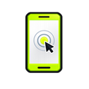

AIVane Browser Bridge
Connect this browser profile to the local AIVane runtime.
Bridge
Checking…
Shared with AIVane Recorder and the local Workbench on this device.

Connect this browser profile to the local AIVane runtime.
Shared with AIVane Recorder and the local Workbench on this device.